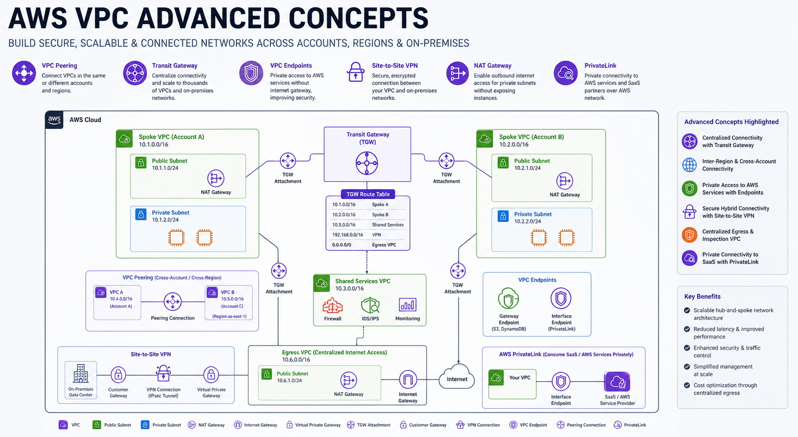

Technical Blog
Insights into AWS architecture, performance engineering, and the future of cloud networking.

Demystifying AWS VPC: From Layman to Cloud Architect
Master the foundations of AWS networking. Learn about subnets, route tables, IGWs, and the famous 'Rule of 5' reserved IPs.

Advanced VPC Concepts: Scaling & High Performance
Dive deep into Transit Gateway, PrivateLink, Global Accelerator, and cross-region peering for enterprise-scale workloads.

NAT Gateway vs PrivateLink vs VPC Endpoints
Cost & Architecture Trade-offs. A comprehensive comparison of secure internet and service connectivity patterns in AWS.

Transit Gateway vs VPC Peering — When to Use What
Mesh vs. Hub-and-Spoke. A deep dive into choosing the right connectivity strategy for enterprise-scale AWS environments.